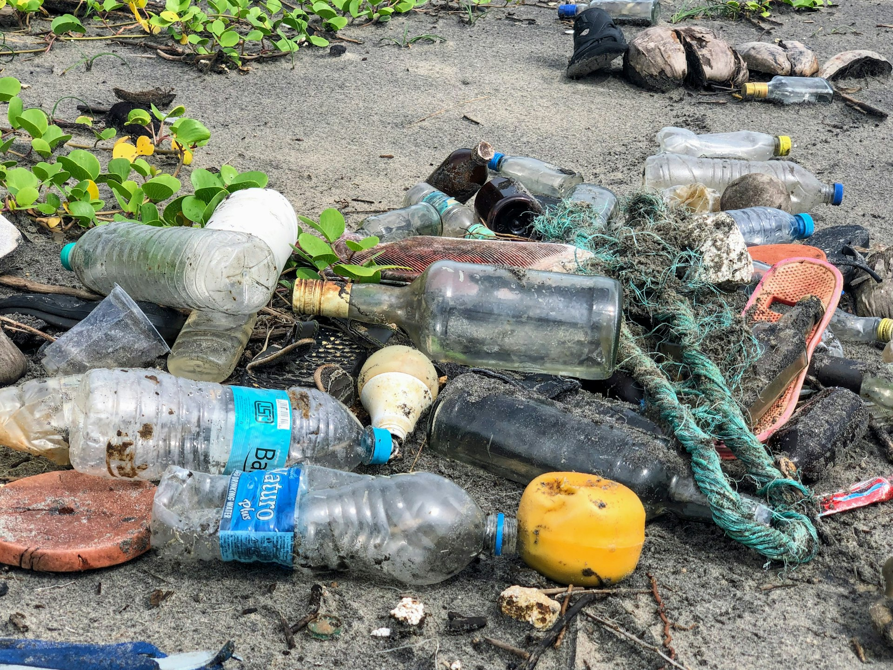

Siap Melangkah Menuju Lingkungan yang Lebih Bersih?
Bergabunglah dengan ribuan warga yang telah merasakan kemudahan memilah sampah dari rumah dengan bantuan teknologi cerdas PilahKi'.

Hilangkan keraguan memilah sampah rumah tangga. Cek kategori secara instan, temukan bank sampah terdekat, pantau jadwal angkut, atau tanyakan langsung pada AI.
Sebagian besar warga ingin berpartisipasi menjaga lingkungan, namun sering terbentur oleh 4 kendala utama ini:
Tidak tahu kategori sampah (organik, anorganik, B3, atau residu) dan cara penanganan yang aman sebelum dibuang.
Tidak mengetahui keberadaan Bank Sampah atau TPS terdekat, jam buka, dan jenis sampah yang mereka terima.
Jadwal truk pengangkut sampah tidak transparan, menyebabkan sampah menumpuk di depan rumah dan berbau.
Setelah dipilah, warga bingung ke mana sampah bernilai harus disalurkan agar tidak kembali tercampur di TPA.
Semua kebutuhan informasi pemilahan, fasilitas terdekat, jadwal, dan asisten AI terangkum dalam satu pintu web yang ramah dan mudah diakses siapa saja.
Dirancang spesifik untuk mendukung warga hidup bersih dan berkelanjutan, mulai dari pemilahan harian hingga bantuan kecerdasan buatan.
Kenali kategori sampah rumah tangga dalam hitungan detik. Dapatkan panduan tepat apakah sampah termasuk Organik, Anorganik, B3, atau Residu beserta instruksi penanganannya yang aman sebelum dibuang.
Temukan Bank Sampah dan TPS terdekat dari tempat tinggal Anda lewat GPS atau pemilihan wilayah manual, lengkap dengan jam operasional, petunjuk arah rute, dan jenis sampah yang diterima.
Pantau jadwal penjemputan sampah rutin di lingkungan RT/RW tempat tinggal Anda. Tidak ada lagi tumpukan sampah berhari-hari di depan rumah karena jadwal pengangkutan yang transparan dan tepat waktu.
Akses artikel informatif, infografis praktis, dan tips gaya hidup minim sampah (zero waste). Pelajari teknik komposting mandiri dari sisa dapur hingga cara tepat mengisolasi limbah B3.
Tidak perlu berpindah-pindah menu secara manual. Cukup tanyakan langsung pada chatbot PilahAI.
Fitur Cari Lokasi dan Jadwal Angkut mempermudah warga mengakses infrastruktur pengolahan sampah kota, mencegah TPS liar, dan menata sanitasi lingkungan pemukiman.
Fitur Pilah Sampah memfasilitasi pengolahan kompos organik rumahan, secara langsung memangkas emisi gas metana (CH₄) berbahaya dari penumpukan sampah busuk di TPA.
Fitur Panduan Edukasi dan PilahAI mendemokratisasi akses literasi pemilahan sampah dengan bahasa santai yang dapat dipahami segala umur tanpa sekat teknis.
Hanya butuh beberapa menit untuk memulai kebiasaan baik menjaga lingkungan sekitar.
Buat akun gratis dalam 30 detik dan tentukan domisili tempat tinggalmu agar sistem dapat menampilkan info yang relevan.
Gunakan fitur cari kategori sampah untuk mengidentifikasi sampah organik, daur ulang anorganik, residu, maupun limbah B3.
Kirim sampah ke Bank Sampah terdekat untuk ditukar manfaat atau siapkan di depan rumah saat jadwal angkut tiba.
Seputar fungsionalitas aplikasi dan cara kerja platform PilahKi'.
Bergabunglah dengan ribuan warga yang telah merasakan kemudahan memilah sampah dari rumah dengan bantuan teknologi cerdas PilahKi'.